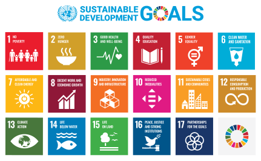

Previous Projects
Sustainable Development Goals Machine Learning Classification
Overview
AidData is an organization based out of William & Mary's Global Research Institute that uses granular data and innovative tools to measure the impacts of worldwide policies and investments. I was brought on as an intern to create a machine learning solution for classification of Sustainable Development Goals.
What are Sustainable Development Goals?
Sustainable Development Goals (SDGs) were established by the United Nations in 2015 to serve as a framework for identifying the ways countries can categorize the environmental, social and economic aspects of sustainable development.
AidData had tons of spreadsheets with thousands of donations and other financial packages from countries all over the world, and these would need to be classified into one of the 17 SDGs for better bookkeeping and analysis of overarching trends. Typically done by hand, this would take a large amount of man hours for initial classification and even more for confirmation that classification was correct. My job was to simplify this process with machine learning.
Technology Used
- Python
- Pandas
- Tensorflow
- Flask
William and Mary Special Collections Exhibits Website
Overview
I was selected as an intern to create a dynamic and responsive website for William & Mary's Special Collections Exhibits. This website was built as an offshoot of the Library's LAMP stack website and used Drupal as a content management system, so that anyone could add new exhbit entries without having to code anything.
Technology Used
- HTML
- SASS
- PHP
- Drupal